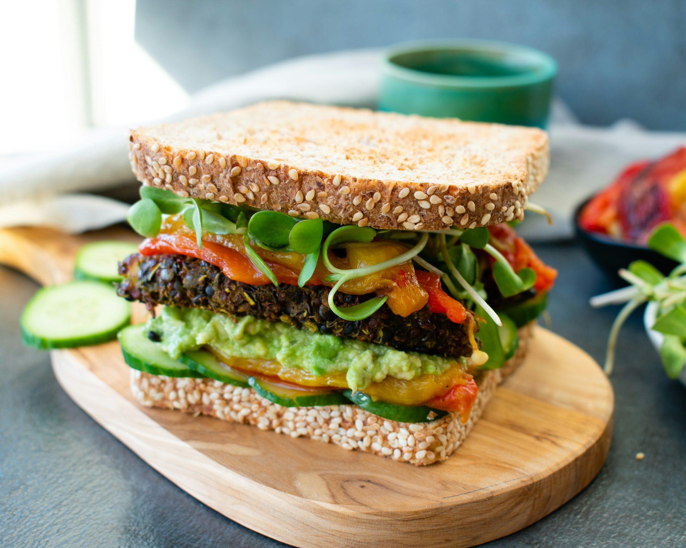
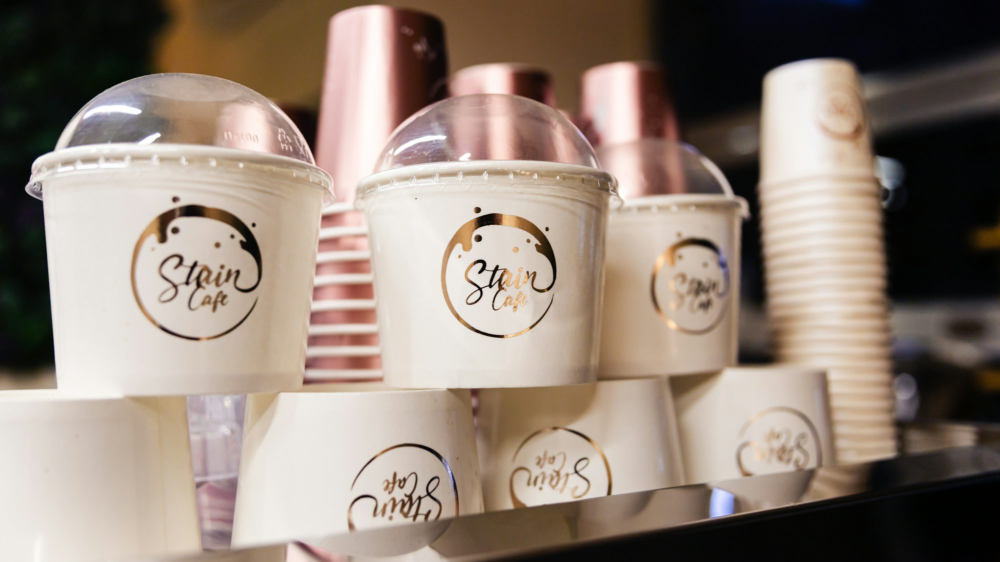

Burgers Around the World: A Global Culinary Adventure
This article explores the diverse and creative variations of burgers found in different cultures, highlighting unique ingredients and cooking styles that make each one special.
Gallery


Reading hub
Cookies: A Sweet Journey Through History and Flavor
This article delves into the delightful world of cookies, exploring their history, various types, cultural significance, and popular recipes that continue to charm cookie lovers around the globe.

Emma Carter
Café Inspirations: The Art of Creating Unique Experiences
This article explores how different types of cafés cultivate unique experiences, fostering creativity, connection, and community among patrons.

Exploring the World of Custards and Puddings: A Delightful Adventure in Texture and Flavor
Dive into the delicious realm of custards and puddings, exploring their rich history, various types, and the techniques that make these creamy desserts a favorite across cultures.

Elena Torres
03-12-2025
Exploring the Diverse World of Vegetables: Types, Benefits, and Culinary Uses

08-05-2025
Exploring the World of Artisan Chocolates
Dive into the fascinating history, production methods, and current trends in the artisan chocolate industry.

07-24-2025

Exploring the Future of Alternative Protein Sources in the Food Industry

Emma Sanchez
05-23-2025